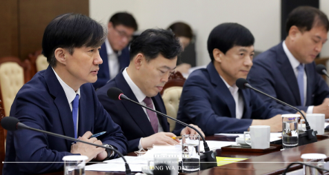

문재인 대통령
위대한 대한민국, 정의로운 대한민국, 자랑스러운 대한민국, 당당한 대한민국
-
실향민의 아들
문재인 대통령은 1953년 1월 24일 경남 거제의 시골 농가에서 실향민의 아들로 태어났다. 그의 부모는 6.25 한국전쟁 당시 흥남에서 피난을 내려와 거제에 정착했다. 초등학교에 입학할 무렵 그의 가족은 부산 영도로 이사하였다. 가난한 집안 형편에도 부산의 명문인 경남중학교와 경남고등학교에 입학하여 우수한 성적을 거뒀다...
-
격동의 청년기
고등학교에 입학하고 부조리하고 불공정한사회에 대한 저항심이 싹트기 시작했다. 중요한 시국상황을 맞이할 때마다 시위대열에 동참했다. 고등학교 2학년 때에는 3선 개헌 반대 시위에 참여하였다.1972년 경희대 법학과에 장학생으로 입학한 문재인 대통령은 1975년 유신독재 반대 시위를 이끌다 징역 8월, 집행유예 1년을 선고받고 강제 징집되어 특전사령부에 입대하였다.
-
인권변호사
1982년, 문재인 대통령은 사법연수원을 차석으로 마쳤지만, 유신반대 시위 전력이 결격 사유가 되어 판사 임용에 탈락하였다. 대형 법률사무소에서 좋은 조건으로 스카우트 제의가 들어왔지만, ‘억울한 사람을 돕고 보람을 찾는 것’이 변호사의 소임이라고 생각한 그는 결국 이런 제안을 마다하고 부산으로 돌아가 변호사 생활을 시작했다. 고 노무현 전 대통령과의 인연도...
-
정치에 눈뜨기 시작하다
문재인 대통령에게 정치적 관심을 일깨워준 최초의 스승은 바로 아버지였다. 어린 시절, 아버지가 장삿길에서 돌아오실 때마다 책을 사다 주신 덕에 책 읽는 재미를 알게 되었고, 중･고등학교 6년간 닥치는 대로 책을 읽으면서 사회를 바라보는 눈을 길렀다. 집에 이웃집 대학생이 찾아오면 아버지께서 사회 문제에 대해 자세히 설명해주곤 하셨는데...
-
참여정부
2003년 문재인 대통령은 노무현 전 대통령이 당선된 후 청와대 민정수석 비서관으로 임명되었다. 인권변호사라는 말을 들으면서 권력을 비판하는 역할만 했을 뿐, 국정운영 경험이나 행정경험이 없었던 그였지만, 노무현 전 대통령과 권양숙 여사의 설득 끝에 민정수석 자리를 받아들였다.1년여 동안 청와대 생활을 마치고 민정수석 자리에서 물러난 그는 네팔 히말라야를...
-
문재인의 운명
노무현과 문재인, 두 사람의 운명 같은 동행! 제19대 대한민국 대통령 당선기념 특별판『문재인의 운명』. 이 책은 노무현 전 대통령 서거 2주기를 맞아 노 전 대통령이 생전에 “노무현의 친구 문재인이 아니라, 문재인의 친구 노무현”이라고 표현할 만큼 신뢰했던 평생의 동지, 문재인의 시각에서 본 노무현 전 대통령과 참여정부에 대한 증언을 담고 있다.
-
대한민국이 묻는다
지금 대한민국이 원하는 대한민국을 문재인에게 묻고 문재인이 직접 답한다! 세월호 그리고 박근혜 게이트를 겪으며 아주 평범한 국민들조차 남녀노소 구분 없이 촛불을 들고 변혁을 외치기 시작했다. 총체적인 국가 위기 앞에서, 한결 같은 정치인 문재인은 다시 희망을 말한다. 국민 모두의 뜻이 하나로 모인 지금이야말로 아래로부터의 진정한 개혁이 가능하다고.
-
운명에서 희망으로
문재인의 ‘운명’에서 대한민국의 ‘희망’으로! 문재인이 말하고, 심리학자 이나미가 분석하다 심리학자가 심층 분석한 문재인의 삶과 생각 “우리의 희망과 미래를 문재인에게 맡길 수 있을까?”
-
1219 끝이 시작이다
18대 대선 후보였던 문재인의 자기 반성과 성찰, 그리고 새로운 시작! 문재인의 대선 평가서 『1219 끝이 시작이다』. 이 책은 지난 18대 대선 이후 일 년만에 자기 성찰과 반성, 현 정부에 대한 비판까지 담고 있다. 문재인은 대선 이후 힘들었던 시간과 국민에 대한 미안함 또 박근혜 정부가 현재 행하고 있는 정치적 행보에 대한 평가를 냉정하게 토로하고 있다.
-
사람이 먼저다
새로운 대한민국을 만들기 위한 문재인의 비전과 약속! 문재인의 힘『사람이 먼저다』. 이 책은 문재인이 정치활동을 하면서 현장에서 했던 발언, 정책에 대한 인터뷰, 세상과 소통했던 각종 기록들을 통해 저자가 바라는 새로운 대한민국의 모습을 상상할 수 있도록 구성한 책이다.
뉴스
매일 새로운 청와대 소식을 확인하세요.
-

신임비서관 인사 발표 관련 고민정 . . .
문재인 대통령은 오늘 신임 비서관 인사를 실시했습니다. 제2부속비서관에 최상영 제2부속비서관실 선임행정관, 일자리기획비서관에 이준협 국회의장 정책기획비서관입니다.
2019.10.04 -
NSC 상임위원회 긴급회의 개최 결과
10.2(수) 오전 7시 50분 정의용 국가안보실장 주재로 국가지도통신망을 통해 NSC 상임위원회 긴급회의를 개최하고, 오늘 북한의 발사와 관련 SLBM을 시험했을 가능성에 무게를 두고 한미 정보당국 간 긴밀한 공조를 통해 정밀 분석해 나가기로 했습니다. 상임위원들은 북한이 10월 5일 북미협상 재개를 앞두고 이러한 미사일 발사 시험을 한 데 대해 강한 우려를 표하고, 북한의 의도와 배경에 대해 한미 간 긴밀히 협의하기로 했습니다. 상임위원들은 이번 북미 간 협상이 성공적으로 개최되어 한반도의 완전한 비핵화와 항구적 평화구축을 위해 실질적인 진전이 이루어질 수 있도록 미국을 포함한 국제사회와 함께 외교적 노력을 기울여 나가기로 했습니다.
2019.10.02 -

제71주년 국군의 날 기념 다과회 . . .
문재인 대통령은 제71주년 국군의 날 기념식에 이어 진행된 다과 자리에서 “태풍 때문에 옥외행사가 괜찮을까 걱정이 많았지만, 여러분들이 애쓰신 덕에 사상 처음으로 이곳 대구 공군기지에서 국민께 국군의 강한 힘을 보여드릴 수 있었다”며 축하와 감사 인사를 전했습니다. 이어 문 대통령은 “데니 태극기를 선두로 22개 6.25 참전국 국기가 함께 고공 강하되지 못한 점이 아쉽다”고 말했습니다. 문 대통령은 “데니 태극기는 고종황제가 외교 고문인 미국인 데니(Denny)에게 하사한 태극기로 가장 오래된 태극기이다. 이는 한미동맹이 얼마나 오래되었으며 튼튼한지를 상징한다”며 주한미군과 유엔사 장병들에게 각별한 감사를 전했습니다.
2019.10.01 -

법무부 업무 보고 관련 서면 브리핑
문재인 대통령은 30일 오전 10시부터 35분 동안 조국 법무부 장관으로부터 ‘인권을 존중하고 민생에 집중하는 검찰권 행사 및 조직 운용 방안’에 대한 보고를 받았습니다. 또한 조 장관은 공석으로 지연되고 있는 대검찰청 감찰부장과 대검찰청 사무국장의 인사를 건의했고, 문 대통령은 수용의 뜻을 전했습니다. 오늘 보고에는 법무부 장관, 법무부 차관, 검찰국장, 검찰개혁단장이 자리했습니다.
2019.09.30 -

IOC위원장 접견 결과 관련 서면 브리핑
문재인 대통령은 24일(현지시간) 오후 5시55분부터 6시23분까지 약 28분 동안 뉴욕 유엔본부 양자회담장에서 토마스 바흐(Thomas Bach) 국제올림픽위원회(IOC) 위원장을 접견했습니다. 이 자리에서 바흐 위원장은 “평창에서 도쿄로, 또 베이징으로 이어지는 올림픽 릴레이의 성공을 바란다. 한중일 3국 협력 증진을 통해 한중일 모두에게 평화의 장이 되기를 바란다”라며 평창올림픽에서부터 시작된 한국의 노력을 높이 평가했습니다. 이에 문재인 대통령은 “바흐 위원장과 나 사이에 거리가 멀지 않은 것 같다”며 향후 긴밀히 협의해 나가기로 했습니다.
2019.09.24 -
더 보기
더 많은 기사자료로 이동